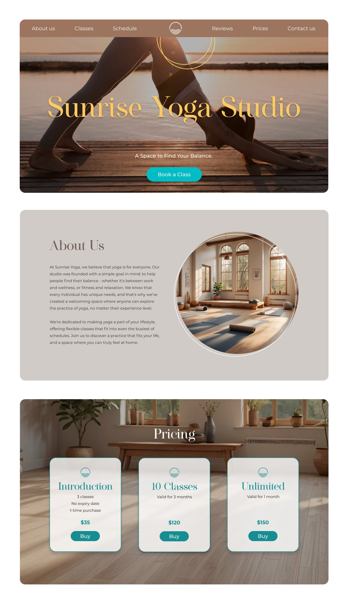
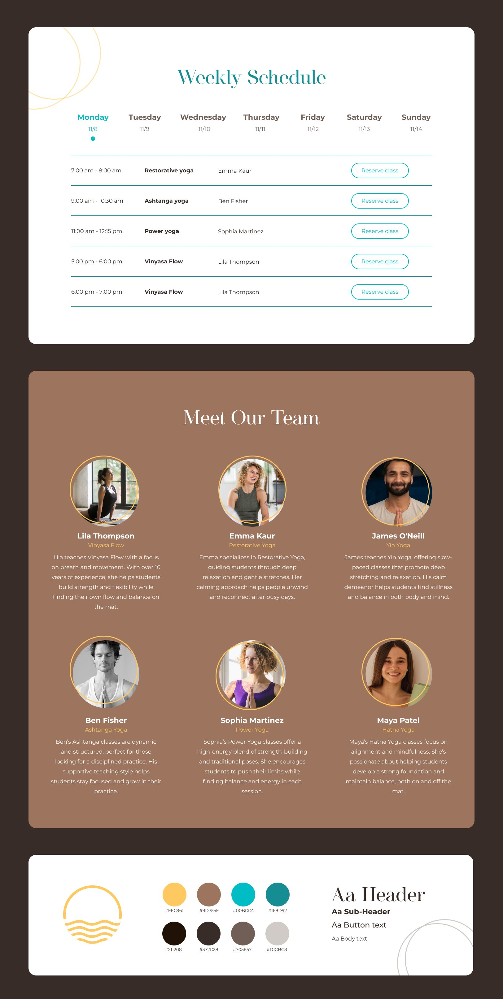

Sunrise Yoga Studio
- UI/UX
- Website
- Figma
This yoga studio website was created as a portfolio piece during a Figma course. The concept was inspired by my own love for yoga, and specifically Mysore, a self-practice traditionally done at sunrise.

